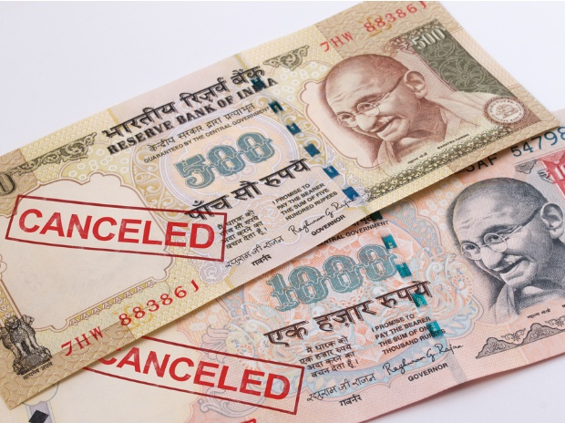
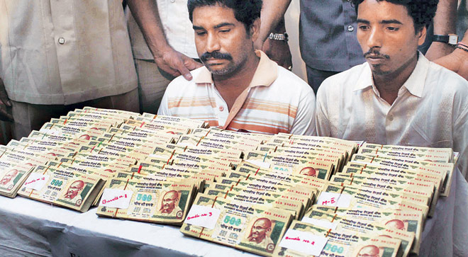
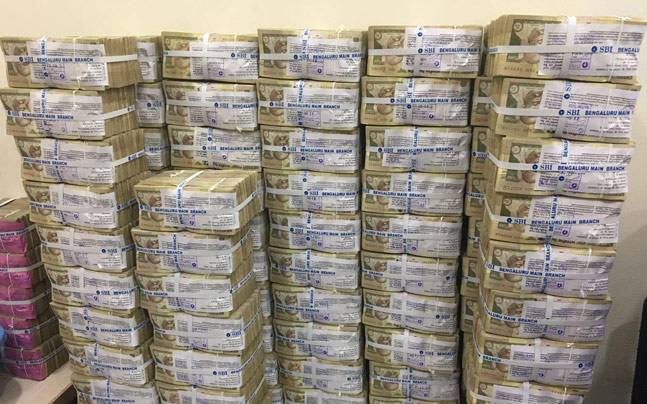
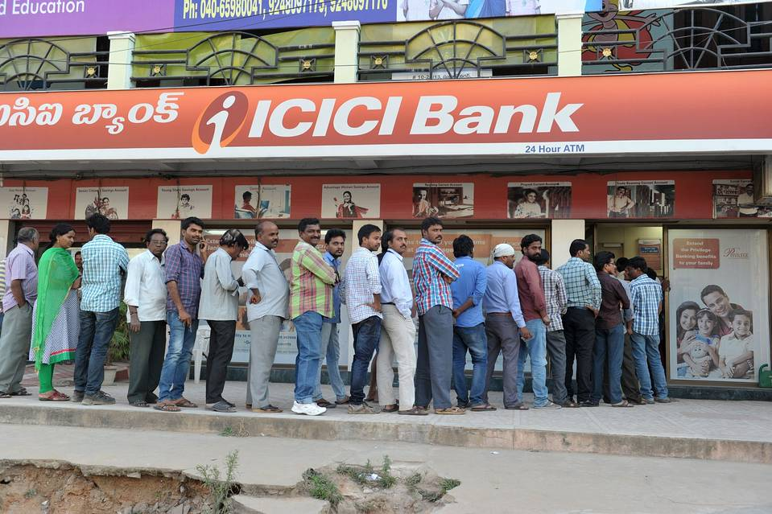
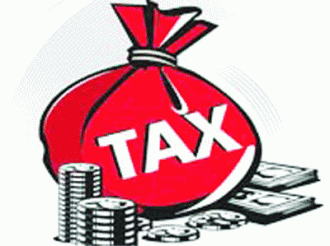
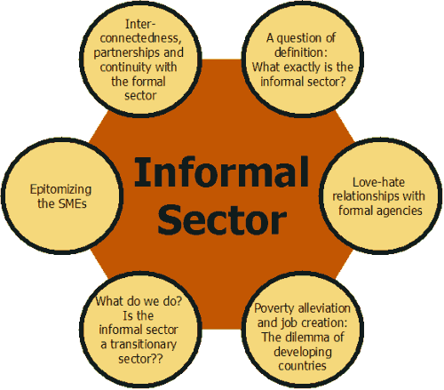
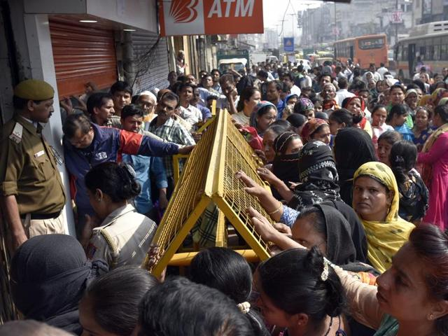

Demonitisation In INDIA
Rumours became rife. Some tried to invest their dying currency in gold. Some contacted their near and dear ones in this miserable hour. People could get only Rs 4000/ of old denomination exchanged with the new one. Big queues before the banks and ATMs became the order of the day.
Instead of getting shorter, these queues were getting longer with every passing day. The last date for the whole process was 30th of December. The persons could deposit the old cash worth Rs 2.5 lac till the said date.
The main objective of this move was to curb the black money, corruption and fake money menace. All the people but those who were indulged in malpractices welcomed the move. The whole opposition shook hand against this move under one pretence or the other. They called this decision a draconian law and wanted the govt to roll back it. Tirades were made to target the decision. Govt also carried out counter attacks.

Let us Explore whether Demonetisation is BOON or BANE for Indian Economy
We have seen a great impact of this move of the Centeral Government on Indian Society and Economy. the First impact was that the people had lower expenditure power.with that thew are not able to purchase luxurious things. There are no unnecessary expenditures on marriages and other ceremonies . So the society will grow lesser materialistic. with the fake money destroyed, Indian Economy will see a big boom and so far booming-real-estate-sector fall on ground.
The Positive Impact of Demonitisation on Indian Economy
1.)Eimination of counterfeit currency
It is not rocket science to understand that counterfeit currency is generally circulated in highest denomination notes to impact most. So, by demonetizing the highest currency notes India could almost eliminate 100% fake currency out of circulation in one stroke.
|
 |
|  |
2.)Abolish Black Money
People having black money generally keep their black money in highest denomination currency notes. This step would abolish black money from the economy as the owners will not be in a position to deposit the same in the banks.
This step would make black money kept in cash which generally used to create chaos and terror or is lying with terrorists, Maoists, naxalites, scrap
|
3.)Strengthen Indian Banking System
This will automatically lead to more amounts being deposited in Savings and Current Account cash laying out of economy flow is now coming into circulation. This in turn will enhance the liquidity position of the banks, which can be utilized further for lending purposes.
|
 |
|  |
4.)Higher Tax Collection
This led to higher tax collection as business men are depositing cash lying with them as current year income with advance tax. Defaulters of bank, property tax, electricity bills and telecom bills are clearing their long pending bills and thus utilizing their old currency notes.
|
5.)Price Cut in Real Estate
As we all know the hype in real estate prices is because of the circulation of black money in this market. Now from this step almost all that black money would get out of circulation from this sector. Eventually the sky touching prices of properties will come down to the reach of a common man. Finally a common man can buy his dream home soon. Hopefully!
|
|
|
6.)A SpeedBreaker of corruption
This step of government will subdue corruption up to a certain level and for a considerable time period which in return will attract foreign investor to Indian market. Indian market has been the first choice of investors considering it’s large size and huge number of consumers. Till now they were reluctant to invest in India because of prevalent corruption and red-tapism. Now we can say that India has overcome both the barriers.
|
The Negative Impact of Demonitisation on Indian Economy
1.)Adverse Impact on Informal Sector
Players of informal sector as they mainly deals in cash only are facing tough time due to this Demonetization scheme already. Sudden removal of cash from market put their business on a dormant phase.
It is important to understand that their income is not black as they don’t come under income tax slab because of less income which has become even lesser now.
|
 |
 |
2.)Plight of Primary Producers
Lack of liquidity would result in distress to primary producers who don’t have much money, so that they could hold their produce for long and on the other side due to lack of currency in flow they are offered very less by the buyers in the market.
|
3.)Possibility of breaking Riots
There are many anti-state elements present in the society who are trying to spread unrest in the society. They can exploit the situation and incite those disheartened people to make a platform to break riots.
|
 |
4.)Decrease in Demand
This is a fact that black economy do support the real economy from demand side, that is to say black money used by the consumers to buy goods or services increases demand for those. Although you may say this is unethical or wrong but it is beneficial from economy’s point of view.
|
5.)Violation of Rule by General Public
As we all know the hype in real estate prices is because of the circulation of black money in this market. Now from this step almost all that black money would get out of circulation from this sector. Eventually the sky touching prices of properties will come down to the reach of a common man. Finally a common man can buy his dream home soon. Hopefully!
|
Conclusion
CHANGE IS HARD AT FIRST,MESSY IN THE MIDDLE AND GORGEOUS AT THE END..